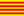

Aegisub / Credits
Programming
Main Programmers:
Rodrigo Braz Monteiro (ArchMage ZeratuL) - Lead developer, video system, audio system, subtitles I/O, tools
Niels Martin Hansen (jfs) - Automation, Lua automation, audio system, tools
 Thomas Goyne (Plorkyeran)
Thomas Goyne (Plorkyeran)Staff Contributors:
Karl Blomster (TheFluff) - General code, FFmpegSource video provider
Fredrik Mellbin (Myrsloik) - FFmpegSource and Avisynth-related code
Amar Takhar (verm) - New unix build system
 David Lamparter (equinox) - Unix port
David Lamparter (equinox) - Unix portAlysson Souza e Silva (demi_alucard) - General code
Other contributors:
- Dan Donovan (Dansolo) - Miscellaneous tools
Patryk Pomykalski (Pomyk) - Miscellaneous patching
 ai-chan - ASSDraw3
ai-chan - ASSDraw3 Evgeniy Stepanov (Azzy) - Some Linux patches, libass
Evgeniy Stepanov (Azzy) - Some Linux patches, libass- Mike Matsnev (Haali) - Some DirectShow code and Matroska Parser library
2points - Linux patches
- p-static - Linux patches
David Conrad (Yuvi) - Mac patches
 Daniel Moscoviter (Mosc) - General patches
Daniel Moscoviter (Mosc) - General patches- Harukalover - Usability, various patches
SAPikachu - General patches
Installer
2.x:
Niels Martin Hansen (jfs)
Fredrik Mellbin (Myrsloik)
Rodrigo Braz Monteiro (ArchMage ZeratuL)
Previous:
- movax
Manual
3.x:
- Thomas Goyne (Plorkyeran)
2.x:
Karl Blomster (TheFluff)
Niels Martin Hansen (jfs)
Rodrigo Braz Monteiro (ArchMage ZeratuL)
Previous:
- Motoko-chan
 Kobi
Kobi- movax
- Jcubed
Hosting
Current:
 DeathWolf: SVN repository for versions 2.1.2+
DeathWolf: SVN repository for versions 2.1.2+Sigurd Tao Lyngse (Bot1): Forums and Main Wiki
Niels Martin Hansen (jfs): Bug Tracker
- Marcello Bastéa-Forte: Documentation Wiki
Rodrigo Braz Monteiro (ArchMage ZeratuL): Domain administration
Previous:
- David Lamparter (equinox): SVN repository for versions 2.00 - 2.1.2
- BerliOS: SVN repository for version 1.10
- Mentar: SVN repository up to version 1.09
Bot1: Bug Tracker
Localization files
2.00 translations:
ArchMage ZeratuL: Brazilian Portuguese
 Ereza: Catalan
 Yuri: Hungarian
Yuri: HungarianHiroshi: Japanese
Jeroi: Finnish
1.11 translations:
Karasu: Traditional Chinese
1.10 translations:
TechNiko: French
- Crysral: French
- thrash-sensei: Russian
- equinox: German
 Nesukun: Spanish
Nesukun: SpanishEmBolo: Italian
Mazinga: Italian
 oblisk: Korean
oblisk: Koreanmulrich: Danish
Additional thanks
 Combined Community Codec Pack staff
Combined Community Codec Pack staff- Gabest for VSFilter
- squid_80 for the x64 builds of Avisynth and CSRI-enabled VSFilter
- Firebird for some of the toolbar icons
- Kayle for help with Win32 VfW interface
- ender for yawning a lot
- Alpha testers: b0nk, Bot1, deathbygirl, DoGfOoD, grimlock, Jagobah, Jcubed, Kintaro, Kobi, kodachrome, maxx-, mASSIVe, Maya, Mentar, movax, msb, neo2sonic, nich,
 nwa, omgifos, SOzuken, TheFluff, thrash_sensei, Vincent, zegnat
nwa, omgifos, SOzuken, TheFluff, thrash_sensei, Vincent, zegnat
About
Aegisub 2 was developed using Microsoft Visual Studio 2005 and wxWidgets 2.8. The Automation module also uses the Lua, Perl and Ruby programming languages. The Regular Expressions code used in this program was written by Henry Spencer and included in wxWidgets. Some builds of Aegisub also uses the PortAudio, OpenAL, PulseAudio, libpng, zlib, Hunspell, universalchardet, CSRI, asa, libass, Freetype 2 and ffmpeg libraries.